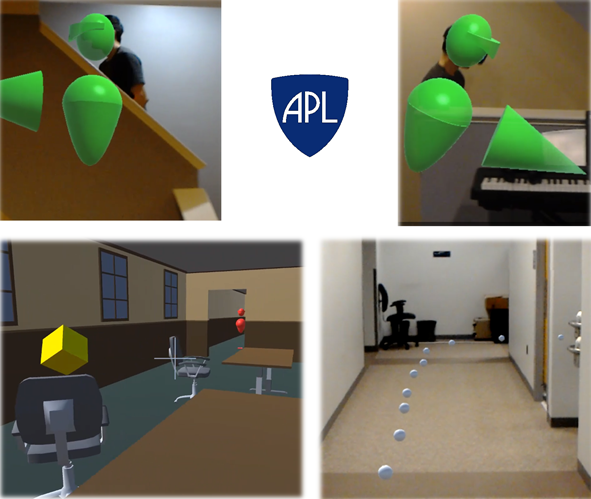

This section provides a few examples of projects that showcase my skills and interests.

At APL, I lead a project to build a system of body-worn sensors that would allow tactical team members to see each other through floors, walls, and obstacles in augmented reality. Using Microsoft's HoloLens, we demonstrated this and other exciting capabilties of tactial use of AR.

I built a robot arm that I controlled remotely with my own arm! An Arduino reads three potentiometers attached to my joints, and broadcasts the readings over bluetooth to a receiver Arduino that controls three servo motors and tracks my movements.

View a simple, thought provoking example of a swarm of individualistically-minded agents "accidentally" cooperate to reach a common goal.

Juke Boxes is a simple puzzle game which I built into a free Android app. I built the app to familiarize myself with AndroidOS.

I made a simulator for ray optics for inhomogeneous metamaterials.

I created a design for a working, motor driven, pneumatic pump that is cut entirely out of acrylic and requires no connective hardware (other than some cut acrylic snap components). This was part of an effort to explore ways to maximize the accessibility of functional ventilators in response to the Covid-19 outbreak.